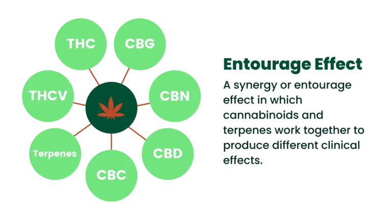
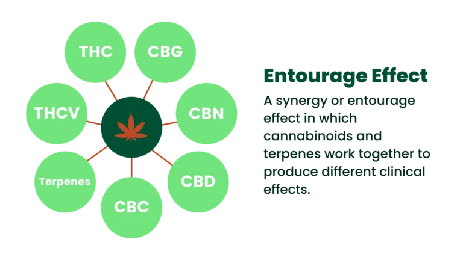
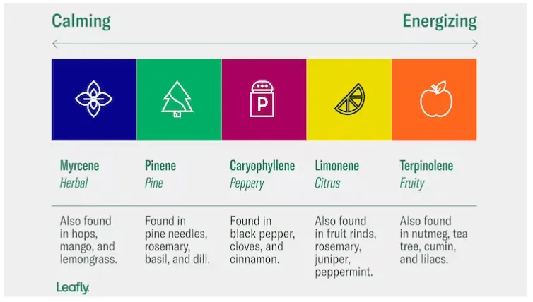

Terpene & Cannabinoid Guide
What is a Terpene? What is a Cannabinoid? What is the Entourage Effect? Cape Cod Cannabis offers our Terpene & Cannabinoid Guide to help explain what terpenes and cannabinoids are, where they come from and how they interact with other compounds to form the entourage effect along with the potential benefits. Click on sections below for more information.
What is a Terpene and where does it come from in the cannabis plant?
Terpenes are a large and diverse class of organic compounds produced by a variety of plants, including cannabis, conifers, and citrus trees. They are responsible for the distinctive flavors and aromas of many plants and have been used in traditional medicine for their potential therapeutic effects. In plants, terpenes serve several functions, including attracting pollinators and repelling predators.
In the context of cannabis, terpenes are often associated with the plant’s aromatic profile, commonly referred to as the “terpene profile” or “terpene profile.” Cannabis strains can have different terpene profiles, contributing to the unique scent and flavor of each strain. Some common terpenes found in cannabis include:
- Myrcene: Known for its earthy and musky aroma, myrcene is believed to have relaxing and sedative effects. It’s also found in hops, mangoes, and lemongrass.
- Limonene: This terpene has a citrusy scent and is found in citrus fruits. Limonene is associated with potential mood-enhancing and stress-relieving effects.
Pinene: As the name suggests, pinene has a pine-like aroma. It’s found in pine trees and is believed to have anti-inflammatory properties. There are two types of pinene: alpha-pinene and beta-pinene.
Linalool: Linalool has a floral scent and is present in lavender, mint, and cinnamon. It is associated with potential relaxing and anti-anxiety effects.
Humulene: With an earthy and woody aroma, humulene is found in hops, sage, and ginseng. It is sometimes considered to have anti-inflammatory properties.
Caryophyllene: This terpene has a spicy and peppery aroma and is found in black pepper, cloves, and cinnamon. Caryophyllene is unique because it can also interact with cannabinoid receptors in the body’s endocannabinoid system.
A good terpene percentage in cannabis that supports the entourage effect typically falls within the range of 1% to 4% of the total weight of the flower or concentrate. Here’s a breakdown:
1–2% total terpenes: Mild aroma/flavor and moderate contribution to the entourage effect.
2–4% total terpenes: Considered a robust terpene profile—often associated with enhanced effects, stronger aroma, and greater synergy with cannabinoids like THC and CBD.
4%+: Quite high—typically found in well-cured, premium flower or live resin products. These can deliver a very noticeable entourage effect.
Terpenes are not unique to cannabis; they are present in a wide range of plants and contribute to the overall sensory experience of various fruits, flowers, and herbs. In addition to their role in aroma and flavor, terpenes are being studied for their potential therapeutic properties, both individually and in conjunction with cannabinoids like THC and CBD.
Terpenes in the cannabis plant, like in many other plants, are produced in the glandular trichomes. Trichomes are small, hair-like structures that are most concentrated on the flowers (buds) of the cannabis plant, but they can also be found on other parts of the plant, including the leaves and stems.
There are more than 100 different terpenes that have been identified in cannabis. Each cannabis strain has a unique combination and concentration of terpenes, contributing to its distinct aroma, flavor, and potentially influencing its effects. While some terpenes are more commonly found in certain strains, the overall terpene profile can vary widely.
The glandular trichomes contain resin glands that produce a mixture of cannabinoids (such as THC and CBD) and terpenes. Terpenes are synthesized in these glands through the same metabolic pathways that produce cannabinoids. The combination of cannabinoids and terpenes in the resin glands gives cannabis its distinctive aroma, flavor, and potential therapeutic effects.
During the flowering stage of the cannabis plant’s life cycle, trichome production increases, and the terpene content becomes more prominent. As the plant matures, the concentration and composition of terpenes can change. Factors such as genetics, growing conditions, and environmental factors also influence the terpene profile of a cannabis strain.
Harvesting and processing methods can impact the preservation of terpenes. Some methods, such as low-temperature drying and careful handling of the plant material, are employed to retain the maximum terpene content in the final product. Additionally, the extraction of essential oils from cannabis, often used in the production of concentrates and extracts, can isolate and concentrate terpenes for various applications.

What is a Terpene and where does it come from in the cannabis plant?
What is a Cannabinoid?
What is a Cannabinoid and where does it come from in the cannabis plant?
Cannabinoids are naturally occurring compounds found in the cannabis plant. These chemical substances interact with the body’s endocannabinoid system (ECS)—a complex cell-signaling network that helps regulate vital functions like:
Mood
Appetite
Sleep
Pain perception
Memory
Immune function
There are over 100 known cannabinoids, each with its own effects and potential benefits. The most well-known cannabinoids are THC (tetrahydrocannabinol) and CBD (cannabidiol), but the cannabis plant contains many others worth exploring.
How Cannabinoids Work in the Body
The endocannabinoid system (ECS) has two primary receptors:
CB1 receptors: Found mainly in the brain and central nervous system
CB2 receptors: Found in the immune system and peripheral organs
Cannabinoids interact with these receptors to help maintain homeostasis—or balance—within the body.
Natural and Synthetic Cannabinoids
Phytocannabinoids: Naturally produced by the cannabis plant
Endocannabinoids: Produced by the human body (e.g., anandamide)
Synthetic cannabinoids: Lab-created compounds that mimic natural cannabinoids, such as:
Marinol (Dronabinol) – This is a pharmaceutical-grade synthetic THC used to treat nausea and vomiting in chemotherapy patients and to stimulate appetite in people with AIDS. It’s FDA-approved and taken orally in capsule form.
Cesamet (Nabilone) – Another prescription synthetic cannabinoid, Cesamet is used for treating severe nausea and vomiting caused by chemotherapy. Like Marinol, it’s formulated to mimic THC but has a slightly different chemical structure.
Choosing the Right Product
Cannabinoid-based products come in a wide range of forms. Depending on your goals, you might prefer:
Flower – Full-spectrum, fast-acting
- Pre-Rolls – Convenient, portable, fast-acting
Vapes – Convenient, portable, quick onset
Tinctures – Precise dosing, discreet use
Edibles – Longer-lasting effects
Concentrates – Highly potent extracts like wax, shatter, live resin, rosin, and distillate
Ideal for experienced users seeking stronger, faster effects
Used for dabbing, vape cartridges, or infusing other products
Topicals – Targeted, non-psychoactive relief
CBD Products – Available in oils, capsules, gummies, topicals, and beverages
Non-intoxicating and widely used for stress, anxiety, inflammation, and general wellness
Perfect for daytime use or those looking to avoid THC
Pro tip: Always start low and go slow, especially when trying THC-rich products.
Cannabinoids are naturally occurring compounds found in the cannabis plant. These chemical substances interact with the body’s endocannabinoid system (ECS)—a complex cell-signaling network that helps regulate vital functions like:
Mood
Appetite
Sleep
Pain perception
Memory
Immune function
There are over 100 known cannabinoids, each with its own effects and potential benefits. The most well-known cannabinoids are THC (tetrahydrocannabinol) and CBD (cannabidiol), but the cannabis plant contains many others worth exploring.
How Cannabinoids Work in the Body
The endocannabinoid system (ECS) has two primary receptors:
CB1 receptors: Found mainly in the brain and central nervous system
CB2 receptors: Found in the immune system and peripheral organs
Cannabinoids interact with these receptors to help maintain homeostasis—or balance—within the body.
Natural and Synthetic Cannabinoids
Phytocannabinoids: Naturally produced by the cannabis plant
Endocannabinoids: Produced by the human body (e.g., anandamide)
Synthetic cannabinoids: Lab-created compounds that mimic natural cannabinoids, such as:
Marinol (Dronabinol) – This is a pharmaceutical-grade synthetic THC used to treat nausea and vomiting in chemotherapy patients and to stimulate appetite in people with AIDS. It’s FDA-approved and taken orally in capsule form.
Cesamet (Nabilone) – Another prescription synthetic cannabinoid, Cesamet is used for treating severe nausea and vomiting caused by chemotherapy. Like Marinol, it’s formulated to mimic THC but has a slightly different chemical structure.
Choosing the Right Product
Cannabinoid-based products come in a wide range of forms. Depending on your goals, you might prefer:
Flower – Full-spectrum, fast-acting
Vapes – Convenient, portable, quick onset
Tinctures – Precise dosing, discreet use
Edibles – Longer-lasting effects
Concentrates – Highly potent extracts like wax, shatter, live resin, rosin, and distillate
Ideal for experienced users seeking stronger, faster effects
Used for dabbing, vape cartridges, or infusing other products
Topicals – Targeted, non-psychoactive relief
CBD Products – Available in oils, capsules, gummies, topicals, and beverages
Non-intoxicating and widely used for stress, anxiety, inflammation, and general wellness
Perfect for daytime use or those looking to avoid THC
Pro tip: Always start low and go slow, especially when trying THC-rich products.
What is the cannabis Entourage Effect?

The entourage effect is a concept in cannabis pharmacology that suggests that the combination of various compounds found in the cannabis plant, including cannabinoids and terpenes, works together synergistically to produce a collective therapeutic effect that is greater than the sum of their individual effects. In other words, the interaction between different components of the cannabis plant may enhance or modify the overall therapeutic outcomes.
The entourage effect is often used to explain why whole-plant extracts or full-spectrum cannabis products, which contain a broader range of cannabinoids and terpenes, may have different or more pronounced effects compared to isolated compounds (e.g., pure THC or CBD). Proponents of the entourage effect argue that the presence of multiple cannabinoids and terpenes in their natural ratios may create a more balanced and effective therapeutic outcome.
Here are some key components involved in the entourage effect:
1. Cannabinoids: THC (tetrahydrocannabinol) and CBD (cannabidiol) are the most well-known cannabinoids, but there are many others present in the cannabis plant, each with its potential effects.
2. Terpenes: These aromatic compounds contribute to the flavor and scent of cannabis and may have their own therapeutic properties. The combination of specific terpenes with cannabinoids is thought to influence the overall experience and effects.
3. Flavonoids: These are another group of compounds found in cannabis (as well as in many other plants) that have antioxidant and anti-inflammatory properties. Flavonoids may also contribute to the entourage effect.
Research on the entourage effect is still ongoing, and the mechanisms behind how different compounds interact in the body are complex and not fully understood. While some studies support the idea of the entourage effect, more research is needed to determine its extent and significance in different therapeutic applications.
It’s important to note that individual responses to cannabis can vary, and what works well for one person may not have the same effects for another. The entourage effect is a topic of interest in the field of medical cannabis, as researchers and clinicians seek to optimize therapeutic outcomes and understand the complexities of the plant’s chemical composition.
Who coined the phrase “Entourage Effect”?
The term “entourage effect” was coined by Israeli scientists Raphael Mechoulam and S. Ben-Shabat in 1998. Raphael Mechoulam is a renowned organic chemist who is often referred to as the “father of cannabis research.” Mechoulam, along with his colleague S. Ben-Shabat, published a paper in the European Journal of Pharmacology titled “An entourage effect: inactive endogenous fatty acid glycerol esters enhance 2-arachidonoyl-glycerol cannabinoid activity.”
In this seminal paper, Mechoulam and Ben-Shabat proposed the concept of the entourage effect, suggesting that the combined action of various compounds in the cannabis plant, including cannabinoids and terpenes, might produce a more significant and synergistic effect than the effects of individual compounds in isolation. They specifically explored how certain fatty acid glycerol esters enhanced the activity of the endocannabinoid 2-arachidonoyl-glycerol.
The entourage effect has since become a widely discussed and researched concept in the field of cannabis pharmacology. It has implications for understanding the therapeutic potential of whole-plant cannabis extracts, where multiple cannabinoids and terpenes are present in their natural ratios. The idea is that these compounds work together to create a more balanced and effective therapeutic outcome compared to isolated cannabinoids or synthetic compounds.

The entourage effect is a concept in cannabis pharmacology that suggests that the combination of various compounds found in the cannabis plant, including cannabinoids and terpenes, works together synergistically to produce a collective therapeutic effect that is greater than the sum of their individual effects. In other words, the interaction between different components of the cannabis plant may enhance or modify the overall therapeutic outcomes.
The entourage effect is often used to explain why whole-plant extracts or full-spectrum cannabis products, which contain a broader range of cannabinoids and terpenes, may have different or more pronounced effects compared to isolated compounds (e.g., pure THC or CBD). Proponents of the entourage effect argue that the presence of multiple cannabinoids and terpenes in their natural ratios may create a more balanced and effective therapeutic outcome.
Here are some key components involved in the entourage effect:
1. Cannabinoids: THC (tetrahydrocannabinol) and CBD (cannabidiol) are the most well-known cannabinoids, but there are many others present in the cannabis plant, each with its potential effects.
2. Terpenes: These aromatic compounds contribute to the flavor and scent of cannabis and may have their own therapeutic properties. The combination of specific terpenes with cannabinoids is thought to influence the overall experience and effects.
3. Flavonoids: These are another group of compounds found in cannabis (as well as in many other plants) that have antioxidant and anti-inflammatory properties. Flavonoids may also contribute to the entourage effect.
Research on the entourage effect is still ongoing, and the mechanisms behind how different compounds interact in the body are complex and not fully understood. While some studies support the idea of the entourage effect, more research is needed to determine its extent and significance in different therapeutic applications.
It’s important to note that individual responses to cannabis can vary, and what works well for one person may not have the same effects for another. The entourage effect is a topic of interest in the field of medical cannabis, as researchers and clinicians seek to optimize therapeutic outcomes and understand the complexities of the plant’s chemical composition.
Who coined the phrase “Entourage Effect”?
The term “entourage effect” was coined by Israeli scientists Raphael Mechoulam and S. Ben-Shabat in 1998. Raphael Mechoulam is a renowned organic chemist who is often referred to as the “father of cannabis research.” Mechoulam, along with his colleague S. Ben-Shabat, published a paper in the European Journal of Pharmacology titled “An entourage effect: inactive endogenous fatty acid glycerol esters enhance 2-arachidonoyl-glycerol cannabinoid activity.”
In this seminal paper, Mechoulam and Ben-Shabat proposed the concept of the entourage effect, suggesting that the combined action of various compounds in the cannabis plant, including cannabinoids and terpenes, might produce a more significant and synergistic effect than the effects of individual compounds in isolation. They specifically explored how certain fatty acid glycerol esters enhanced the activity of the endocannabinoid 2-arachidonoyl-glycerol.
The entourage effect has since become a widely discussed and researched concept in the field of cannabis pharmacology. It has implications for understanding the therapeutic potential of whole-plant cannabis extracts, where multiple cannabinoids and terpenes are present in their natural ratios. The idea is that these compounds work together to create a more balanced and effective therapeutic outcome compared to isolated cannabinoids or synthetic compounds.
Popular Terpenes

Click on the terpenes below to see their individual Aromas, Entourage and potential benefits.
Aroma: Chamomille
Entourage: Anti-Inflammatory, Anti-Microbial, Pain Relief, Anti-Irritant, Stress and Anxiety Relief
Aroma: Ginger, Rosemary, Sage, Thyme
Entourage: Anti-Inflammatory, Pain Relief, Stress and Anxiety Relief
Aroma: Cintronella, Rosemary, Sage, Fir, Neroli Blossom
Entourage: Antioxidant, Antibacterial, Anti-Fungal, Respiratory Relief, Anti-Congestion
Aroma: Black Pepper, Cinnamon, Hops, Oregano, Cloves
Entourage: Anti-Inflammatory, Antioxidant, Stress and Anxiety Relief, Pain Relief, Anti-Fungal
Aroma: Eucalyptus, Tea Tree, Sweet Basil, Cardamom, Bay Leaves
Entourage: Anti-Inflammatory, Antioxidant, Anti-Fungal, Stress and Anxiety Relief
Aroma: Peach, Lemon, Blackberry, Coriander, Rose Oil
Entourage: Anti-Inflammatory, Antioxidant, Antibacterial, Anti-Fungal, Neuroprotectant, Anti-Cancer
Aroma: Tea Tree, Nutmeg, Apple, Cypress, Pine, Lilac
Entourage: Anti-Inflammatory, Antioxidant, Antibacterial, Pain Relief
Aroma: Hops, Basil, Ginger, Clove, Ginseng, Sage
Entourage: Anti-Inflammatory, Antibacterial, Antioxidant, Appetite Suppressant, Anti-Tumor
Aroma: Lemon, Lime, Orange, Celery, Juniper, Citrus
Entourage: Stress and Anxiety Relief, Mood Elevation, Pain Relief, Antioxidant, Antibacterial, Digestion
Aroma: Lavender, Sage, Birchwood, Sweet Orange, Coriander, Cilantro
Entourage: Decongestant, Anti-Inflammatory, Sedative, Stress and Anxiety Relief, Pain Relief, Anti-Epileptic, Anti-Psychotic
Aroma: Mango, Hops, Thyme, Lemongrass, Bay Leaves, Cardamom
Entourage: Anti-Inflammatory, Sedative, Relaxing, Pain Relief
Aroma: Jasmine, Tea Tree, Lavendar, Lemongrass, Ginger
Entourage: Anti-Inflammatory, Antioxidant, Anti-Parasitic, Sedative, Stress and Anxiety Relief
Aroma: Mint, Kumquats, Orchids, Parsley, Basil
Entourage: Uplifting, Anti-Inflammatory, Antioxidant, Decongestant, Antibacterial, Anti-Convulsant
Aroma: Pine Trees, Rosemary, Dill, Ginger
Entourage: Anti-Inflammatory, Memory Aid, Pain Relief, Stress and Anxiety Relief, Anti-Microbial, Anti-Depressant
Aroma: Catnip, Peppermint, Rosemary, Ginseng, Spearmint
Entourage: Stress and Anxiety Relief, Pain Relief, Sedative, Anti-Inflammatory
Aroma: Tea Tree, Cumin, Nutmeg, Apple, Lilac, Mint
Entourage: Antibacterial, Antioxidant, Sedative (on its own), Energizing (when paired with THC), Gastrointestinal Aid
Please visit our Intro to Cannabis page for more information.
*Cannabis is for use only by adults 21 years of age or older. All information contained herein is for educational purposes only. None of this information should be interpreted as medical or treatment advice for any person or condition. Always consult with a licensed physician in all matters regarding your health. View our Disclaimer.